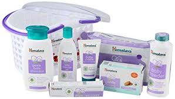
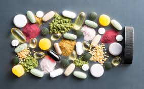
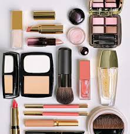
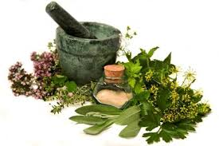

E-Mail:Info@Healthpriority.com
Home| Herbs| Beauty Products| Baby Products| Supplements| About Us| Contact Us
Introduction
HealthPriority sells nutritional supplements and other healthy products both domestically and internationally.As a rapidly expanding business.HealthPriority has one of the largest selections of high quality nutritional products in the world. Herbs offer an effective approach to improve the well-being and quality of life. Instead of the side effects that many pharmaceuticals and OTC drugs have, herbs provide numerous side effects.
Baby Products
Nowadays,people are unaware of the healthiest ingredients or cooking methods. They rely on fatty or starchy foods as the basis for meals. Not only adults, even kids have developed the picky eating habits.
We provide types of baby products, such as:
- Baby Powder
- Milk Bottles
- Tissues
- Oil
Supplements
Dietary supplements are vitamins, minerals, herbs, and many other products. They can come as pills, capsules, powders, drinks, and energy bars. Supplements do not have to go through the testing that drugs do.
We provide types of supplements, such as:
- Multivitamin
- Protein Powder
- Cell Activator
- Calcium Tablets
- Aloe Plus
- Cell-U-Loss
Beauty Products
Cosmetics are substances or products used to enhance or alter the appearance of the face or fragrance and texture of the body. Many cosmetics are designed for use of applying to the face and body. They are generally mixtures of chemical compounds derived from natural sources (such as coconut oil), or may be synthetic or artificial. Cosmetics that are applied to the face to enhance one's appearance may be called makeup which include lipstick, mascara, eye shadow, foundation among other products.
We provide types of beauty products, such as:
- Cleansers
- Toners
- Moisturisers
- Eye Care
- Make Up
- Skin Activator
Herbs Products
Herbal products are medicines derived from plants. They are used as supplements to improve health and well being, and may be used for other therapeutic purposes. Herbal products are available as tablets, capsules, powders, extracts, teas and so on. Herbal medicines are thought to be safe as it is natural, but in fact it can cause serious adverse effects and interaction with other drugs and supplements.
We provide types of herbs products, such as:
- Back Cohosh rhizome and root
- Pelargonium Root
- Echinacea purpurea
- Valerian Root
- Ginkgo Leaf
- Moisturisers
Note:
All our products are reliable and genuine.